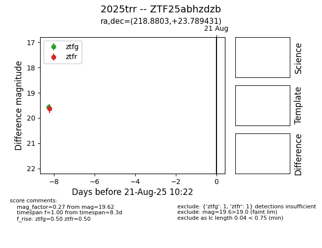

Target 2025trr at 2025-08-21 10:22, see:
FINK: fink-portal.org/ZTF25abhzdzb
Lasair: lasair-ztf.lsst.ac.uk/objects/ZTF25abhzdzb
ALeRCE: alerce.online/object/ZTF25abhzdzb
TNS: wis-tns.org/object/2025trr
YSE: ziggy.ucolick.org/yse/transient_detail/2025trr
alt names
ZTF25abhzdzb (ztf,alerce)
2025trr (tns,yse)
coordinates:
equatorial (ra, dec) = (218.8803,+23.78943)
galactic (l, b) = (30.6570,+66.31299)
photometry
last ztfg=19.57, ztfr=19.62
1 ztfg, 1 ztfr detections
